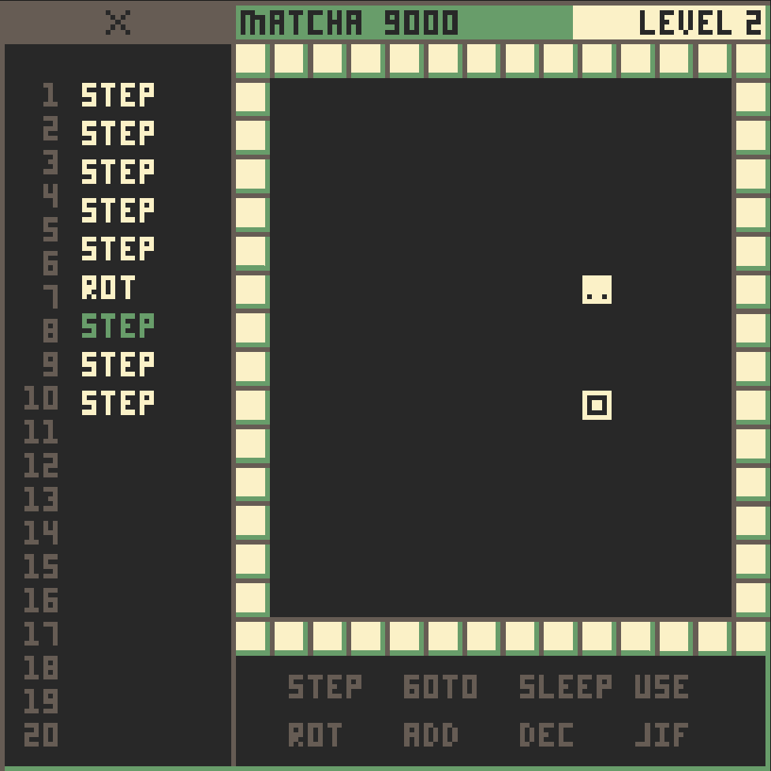

WASM-4 Game Jam: Day 3
Today was great! Among other things, I:
- Landed on a good color scheme [1]
- Named it "Matcha 9000" [2]
- Added basic level rendering
- Added the CPU queuing logic

Note that the x'd out section at the top is covering up what will be the
accumulator display, which will be unlocked at a later level. It looks out
of place right now, but it will look a lot better when the operators in the
bottom right are locked as well.
Tomorrow
Tomorrow I am (hopefully) going to spruce everything up, add some actual levels, some background music, dialogue boxes, and more!
[1]: I basically just ripped the colors from Gruvbox, my favorite color scheme.
[2]: Matcha is a type of green tea, which happens to go great with the green/aqua color scheme. The "9000" is added because I can.